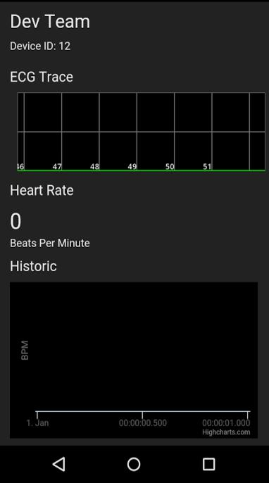

The aim of the UberVest project was to create a wearable device that would be able to monitor the wearers heart rate and body temperature. We saw two main uses for such a device, the first would be for fitness enthusiasts who wanted to get more feedback from their workout and the second is for the elderly or people at risk of heart problems so that assistance can be called promptly should complications occur. We decided to build this device into a vest, since it can be worn under other clothes and it is in close contact with the wearers skin, allowing us to get the most accurate readings.
Our original idea was to have the device directly communicate with our API server over GPRS, but due to availability constraints we decided it would be simpler to use a mobile phone application to act as the middle-man between the device and the API. This application would maintain a Bluetooth Low Energy connection with the device and transfer any data to an online database, where the API would take it and perform data analytics then return useful information that the mobile app would then display to the user. The majority of my work for this project was done on this application so this report will be focused on the design decisions I made and why I made them.
The requirements for the mobile application are fairly simple:
A lot of the design decisions I made were made as the app developed. I started off by building a skeleton program, the function of which was to just push random data to an online database. I did this in order to test the frequency that I could upload data and whether that matched the frequency we were reading data from the device. For our online storage we decided to use Firebase [1], because unlike other free online storage options (Redis, RethinkDB) it allowed us to directly access the database without having to add an extra step. After the initial tests I discovered that the frequency we could push to Firebase was more than a hundred times a second, which is more than enough for the 50 times a second the device was sampling the ECG readings.
The next step was getting the data off the device so we could start pushing something meaningful to Firebase. This was done over a Bluetooth Low Energy [2] connection, I started by searching for all nearby devices and then finding the one with the specific MAC address we were looking for. This method was largely inconsistent and a majority of the time it would either take upwards of 5 minutes to form a connection or we would have to restart the app/device. I managed to improve drastically on this by filtering the scan search so that it ignored other devices and changing the scan settings so it searched in low latency mode. After this change the connection to the device only took between 5 and 10 seconds on average. Once the connection had been established the application would find a service (using a service UUID we had pre-defined) which would be used to find the characteristics (which again had pre-defined characteristic UUIDs). As soon as we found these characteristics, we could set up a background thread that would wait until a change had been detected in the ECG characteristic. Once a change was detected, the application would read the data stored in the characteristic as a byte, convert it to an int and push it to Firebase. Once we added a temperature characteristic as well we sampled this at the same rate as the ECG characteristic since it saved us from having to run another background thread as the temperature is only sampled by the device once every second.

Screen shot of the user interface
Finally for the user interface design I decided to keep it simple, upon first starting up the app the user is taken to a log-in screen. Since we only had one device this was more for show, but this could eventually be extended so that once the user logs in, the app would be able to get the specific MAC address of that users device and take them to their own unique page. After they log in the device immediately starts reading data from the device and uplading it to Firebase, in the foreground the user is taken to their specific UberVest page, where they will be able to see the live readings of their BMP and temperature as well as the ECG trace. The reason I decided the app should automatically begin reading and transmitting the data, is that this device is intended to be in use at all times whilst the app is open. In the case of the fitness enthusiast, they would put on the vest, start the app and then close it upon finishing their work-out. The historical data is still able to be viewed online, even on their mobile web browser so their is no reason for the app to be open. In the case of the patient with heart problems we want data to be collected all the time, if there was a button that turned it off that was accidentally pressed then assistance could be called by mistake or not be called in the event of an emergency. Removing this extra step in starting/stopping the retrieval of data from the device also streamlines the user experience. All the user needs to do is enter their username and pasword and the app does the rest, so the user won't have to be taught how to use the device.
In the end the app served two purposes, it acted as the transfer stage between the device and the API and it also relayed the information from the API back to the user. In terms of evaluating the app as a transfer stage we found there was a delay of less than a second between data being read by the ECG sensors and the reading being displayed on the app. We tested this by having the wearer generate a large anomaly by hitting themselves in the chest or moving around a lot and timed until this anomaly was displayed. Considering the number of steps between the sensors getting the data and the app displaying it I would say this time interval is perfectly acceptable, less than a second is small enough for it not to be noticeable to the user and they are getting close to real-time readings from the device.
In order to evaluate the app as it would be perceived by a user I spoke to people who use similar products like Fitbit [3] in order to track their heart rate, they all said that their favourite part about their device and the app that comes with it is that there is very little setting up to do. Within minutes their device is working and they can be on their way, when I briefly showed them the app and how it worked they all seemed impressed and liked the fact that it would work as soon the app was started. I also spoke to nurses who worked in nursing homes and spend a lot of time taking care of the elderly, a number of whom have to be monitored in case they have heart problems. They said that such a device would be incredibly helpful for them as the response time from someone having a heart attack/stroke and someone noticing and getting assistance is incredibly important to them. They agreed that the app should be simple to use, but they said in their case it would be more useful to be able to view multiple patients at the same time which would be difficult at the moment since each device needs a phone to act as the transfer stage.
There are a number of possible extensions that I believe would have been valuable to the project. The first would have been adding more sensors, we tried to add a respiratory sensor which had already been programmed to work with a separate mobile app but I was unable to access the characteristics on the sensor and so was unable to get it to work in tandem with the rest of our sensors. If we had more time and resources I think it would have been useful to explore the possibility of using the vest to automatically detect heart attacks as our current system relies on someone constantly watching their ECG reading, after speaking to some doctors I believe this would be possible but in order to accurately detect heart attacks we would need a lot more data and it would have taken more time than we had. Specifically in terms of the app I think it would have been useful to spend some time future proofing the app should have made multiple devices as currently it only searches for the specific MAC address of the device we built. Also allowing the app to act as a transfer stage for multiple devices could be useful for nursing homes and other situations where a user wants to monitor multiple people but doesn't want to have a separate smart-phone for each of them.